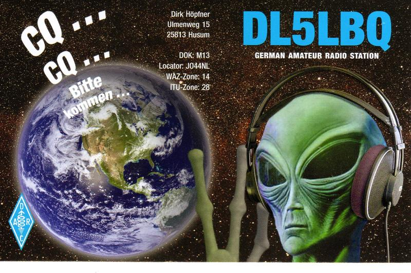
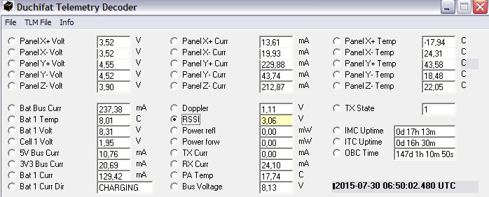
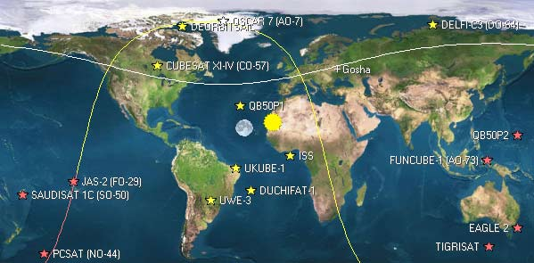

Слышимость отменная, но корреспондентов мало. Связь вообще одна - SSB c Андреем RA1OK. Саунд как подтверждение тгого что было слышно - http://hammania.net/sound/sat_ao72_1706.mp3
UY2RA WW-locator KO51IM city SlavutichГлас вопиющего в пустыне! :-( Пролетающий XW-2B слышал отменно все двадцать минут. Всё время стоял на CQ!! Ни одного вызова за 20 минут! Как так?!! В центре Европы ?! А может вечер воскресенья?
UY2RA WW-locator KO51IM city Slavutich Сегодня был допущен к своему УКВ столу, где собрано спутниковое оборудование :-) И заодно был приятно удивлен работой транспондеров многих спутников. Почти все включены. А раньше было меньше. Команды сопровождения перестали экономить батарейный ресурс и я сегодня даже слышал себя через транспондер АО-73, который последний раз в работе слышал год назад. Ну, правда, я такой же: раз в год его и смотрю:-) Кипр на HuskySaty-1 в SSB, а на старичке АО-7 сработал телеграфом RA1OK! DX!
На выделенных строках в FM работают 8! Значит доступны с Баофенга, не говоря уже про что-нибудь серьезнее..... Рота, в ружье, лето пришло..... :-)
Успешно отработал новую страну 5B4APL :-) А еще HB9IJJ, DL6KBG, DL6AP, IK6GZG Слышно хорошо, но очень странные QSB
UY2RA WW-locator KO51IM city SlavutichКак бы я ни хотел чтобы все работали телеграфом, побеждает всё то что просто. Пролетевший только что FM спутник АО-91 чуть не подарил мне новую страну - A61Q Но не подарил. Зато связи c ES1OV, RK3BM, OH8JP, R8AZ, UN9FWW, UK8AKD, RA4UAR. Так что начинаю понимать что пора перестраиваться :-) От простого к сложному наоборот :-) Sound http://hammania.net/sound/sat/ao91_2103.mp3
UY2RA WW-locator KO51IM city SlavutichQSO OE3KEU, IZ1ERR, IW7DZN, DG0BBE, HB9OAD, G1LEC Всё было с QSB но всё подтверждается аудиозаписью - http://hammania.net/sound/sat/ao91_1503.mp3
UY2RA WW-locator KO51IM city SlavutichПровёл связи с RX6AQD, ON5PU, US5MAJ Аудио длинное и бестолковое, но редактировать лень :-) http://hammania.net/sound/sat/xw2f_1403.mp3
UY2RA WW-locator KO51IM city Slavutich TNX QSO UN7GN 17:13
Было приятно проводить связь потому что было здорово слышно. Спасибо.
на XW-2A, D,B провел CW/SSB связи с 9H1BT, SM0HEK, I5YDI, EA3GOD, IK6GZM, EI2GLB, M0VOX
UY2RA WW-locator KO51IM city SlavutichПровёл связи OM0AS,G4GBV CW, IZ0CBD-SSB. Хорошо слышно. Всё время менял уровень громкости чтобы не "вырубить" Оскара, но всё-таки вырубил. Где-то над Швецией- Новой Землей. А может и не я....
UY2RA WW-locator KO51IM city SlavutichHeard today
RS0ISS WW-locator cityQSO R9LR confirm
UY2RA WW-locator KO51IM city SlavutichQSO FM with R9LR, RU4WM, RA3LBK, UA9LFA, UA1WBM, RW9SE, US5LD, RA9AVL. Very loud Sound http://hammania.net/sound/sat/ao92_2312.mp3
UY2RA WW-locator KO51IM city Славутичhvala
YU5EQP WW-locator KN02XX city leskovacQSO DG0ER, PD4HBD, SV2CPH, F0DIH. Спутнгик ужасно крутиться, сигнал то 59+40, то вообще ниже уровня шумов. Приходится и самому крутиться :-)
UY2RA WW-locator KO51IM city СлавутичQSO SSB EC5CIA, EA3CAZ, HB9IJJ. В телеграфе к сожалению никого. Даже не слышал.
UY2RA WW-locator KO51IM city Славутич JY1SAT AO-97 Попытался попринимать картинки с него, но не тут то было: под ХР декодер его не работает. Кто-нибудь принимал? Как впечатления? Дайте знать.
Егор
Спасибо за CW QSO, Евгений, RW9SE А еще спасибо UA9AKC, очень громко и с отличным сигналом в телеграфе.
UY2RA WW-locator KO51IM city СлавутичБыл очень рад слышать что Оскар 7 пролетел всю орбиту и не выключился. QSO с RA1OK в 09:27 UTC но к сожалению больше никто не отозвался, хотя на фонограмме слышно как кто-то искал свой сигнал. Достаточно громко. Летящий следом AO-92 порадовал уровнем - до +25 дБ, но именно поэтому прорваться сквозь стену зовущих не вышло. Ни одной связи, хотя в паузах себя слышал :-)
UY2RA WW-locator KO51IM city Slavutich Слабо очень, но слышал себя через АО-7. Жив курилка. Очень и очень слабо, но слышал. Интересно кто-нибудь умудряется при таких уровнях сигнала проводить трансконтинентальные QSO? На китайских братьях всё по старому: радуют связи со старыми знакомыми.
А вот на XW-2A за 11 минут цекюляния никто не подошёл. А мы говорим про развитие, про привлечение молодёжи. Скоро всё вымрем :-( Как мамонты.
UY2RA WW-locator KO51IM city СлавутичПровёл связи с RV3DCM, UB9YUS, R2FAV и RA1OGV. Слышал еще OH5LK, но не звал. На этом спутнике с ним уже работали. К сожалению все они (спутники) низколёты -быстро улетают :-)
UY2RA WW-locator KO51IM city СлавутичСпутник летел восточнее, поэтому в основном Россия. 18:08 R9LR, 18:10 UR9MS, 18:12 SQ7OFL, 18:14 RW9SE, 18:15 RK3BM и корреспонденты кончились :-( Но темп был хороший.
UY2RA WW-locator KO51IM city СлавутичСлушал телеметрию на DelphiC3, да зацепился за XW-2A. Провёл связи с 4X1AJ (17:44) в телеграфе и R9LR в SSB (17:46). К своему удивлению не услышал DIGI МКС, но выяснилось что их уже пару дней никто не слышит.
UY2RA WW-locator KO51IM city СлавутичПрослушал две орбиты китайской великолепной семёрки. На XW-2F слышал итальянца, на XW2A-всё остальное только себя в телеграфе. Хоть была возможность потренировать левую руку на виброплексе - не ответил никто. Как в том анекдоте "это что за чёрти-что, видишь дома нет никто" Пропиликал до полпакета NO-44. Вот уже должен слышать SaudiSAT, но не слышу. Через полчаса начинается футбольный вечер, а у меня ни одной связи :-(
UY2RA WW-locator KO51IM city СлавутичНовый корреспондент - UA9AKC. Негромко, но единственный на всей орбите :-)
UY2RA WW-locator KO51IM city СлавутичПосле долгого перерыва посмотрел на спутники. Жаль не слышно моего любимца FO-29. Зато жив AO-7 Слышал себя неплохо, к сожалению связь не вышла. Зато на FM да SSB с CW DG0ER, DF9QV, 5B9IIJ, RW3VA, US5MAJ, US5QKZ, uw3VA(FOX-1B), EA4NF, G0IIQ, EA1VM и это на AO-92, AO-92, AO-95, AO-7.
UY2RA WW-locator KO51IM city SlavutichG: *W*NVI 6HEETH
4X4HSL WW-locator city Krasnoyarsk TEITEE TT G: *W*NVI 6HEETH E E T EEE I E UN OO E I T E T T T O
* A E SE E II E E T N
После рыбалки с особенным удовольствием постучал/покричал на FO-29 :-) QSO OM0MS, F0DIO, RA9CCU, UN7GN, HA6NM. Да, ноывх стран нет. Ну и что?
UY2RA WW-locator KO51IM city Slavutich Никак не могу поверить что FM спутник Fox1D на сегодня самый популярный. И продуктивный поэтому. Казалось бы - 1 FM канал на всех против 100 килогерц в SSB!!! Уму непостижимо. Однако вот только что летел, минуты 4-5. А вот список связей: US5MAJ, DL8RCB, UT1DX, UR3QTN, EA5YF, SV2CPH И ЕЩЕ ПАРА ИТАЛЬЯНЦЕВ ОСТАЛАСЬ ЗА КАДРОМ ИЗ-ЗА ПОМЕХ!
To Сергей ES1ACS: Спасибо за связь. А насчёт того что спутник в зените не слышен, так проверьте направление антенны. Если есть управление по углу места, то из-за небольшого (относительно) расстояния и если антенна скошена, то можно не слышать вообще. Если же нет элевации, то тем более понятно: стоит вспомнить диаграмму направленности Яги-Уда в вертикальной плоскости. 73!
UY2RA WW-locator KO51IM city SlavutichПосле длительного перерыва пришло вдохновение, соорудил антенну и решил открыть для себя новый спутник AO-92 (раньше работал через SO-50). Уже который день провожу связи через AO-92 Что радует: вечером (19-22), когда летит над Россией, нет свалки. Может это только мне так везёт. Сегодня был виток прямо надо мной - почти 90гр. Итог - евросвалка. Победил дядя с очень длинной антенной, который всех накрыл и которому едва удалось провести пару связей. Куда мне со своими 3 Ваттами... Для себя ещё не совсем понял почему спутник слышит меня именно на спадающей позиции: начиная где то с 45 градусов веду его практически до горизонта и слышу себя прекрасно через full duplex, частоту передачи подстраиваю постоянно. Видимо надо антенну допиливать. Теряюсь в догадках. Благодарю UY2RA за QSO и рад знакомству! Освоение продолжается.
ES1ACS WW-locator KO29IK city TallinnНе скажу что уж очень ньюван, но корреспонденты новые - ES1ACS и UN7EG. Последний с сильными помехами от телеметрии его же (FOX1D) телеметрии,но в общем приятно. Из старых корреспондентов R7LP, HA6NM, HA5AJZ
UY2RA WW-locator KO51IM city SlavutichTo UA9CS: Игорь, в который раз ты "погасил" АО-7. Он же прямо над тобой летел, зачем такую мощность в него вдуваешь? Пожалуйста, проверяй, слышит ли тебя спутник на минимуме и добавляй если только не слышит. Была хорошая орбита на Японию, а теперь нет :-(
UY2RA WW-locator KO51IM city SlavutichПо жизни недолюбливаю FM моду. Ну как крутой радист через нижнюю губу :-) Шучу, конечно, чем она хуже чем сверлящие уши пакеты AX25? А всё равно связь. И в логе, и как страна засчитывается :-) Вот сегодня провёл, наверное, самую трудную FM свяь через Fox-1D - UK8DAN. Новая страна, спасибо. Серажетдин был терпелив и минут за 6, наверное :-), мы связь всё-таки провели. Узбекистан, локатор MN40ht. Пару недель назад он проходил громогласно да и я себя слышал хорошо, а сейчас спутник был далеко и от него и от меня да еще и крутился:-( Но связь есть. В подтверждение и в качестве иллюстрации что FM - это плохо привожу запись :-)
UY2RA WW-locator KO51IM city SlavutichСегодня было немного времени поработать через спутники. AO-7 после первых же сигналов выключается, :-( хотя начало слышу. FM спутники очень уверено- только что на АО-91 G0ABI, RW6N, RK6MC, RA9FFF, OM0AS, SP6BNG. Аудиозапись тут - http://hammania.net/sound/sat/ao91_2801.mp3
UY2RA WW-locator KO51IM city СлавутичК нашей радости вчера "открыли" АО-92. Сегодня обновил и 91 и 92, а так же с удовольствием пообщался со старыми друзьями на АО-7
UY2RA WW-locator KO51IM city SlavutichAO-7, FO-29, AO-91, AO-85 Вcё слышно отлично. Даже в FM :-) QSO GI6GTY, RW3XL, UA9CS, UA4NM, UN7CY
UY2RA WW-locator KO51IM city SlavutichСлучилась приятнfя неожиданность: только что на FO-29 новая страна BD9BU. Громко и быстро :-)
UY2RA WW-locator KO51IM city SlavutichВсех сегодня слышал отменно, до 9 баллов:QSO SSB -> EA1BYA DL8RCB RN6BW, UX0FF, E4CYQ / QSO CW -> EA1BYA, R7MU, HA5AJZ
UY2RA WW-locator KO51IM city SlavutichСегодня времени было не очень, но в обед и после работы проверил не упал ли какой-нибудь спутник. Нет, не упал. Все летают. Добыча за день - RK3WE, UR3CTB, DL9QJ, EA1JK, R7LB, UW7LL, RW3QJA, G0ABI, G0GFX, M0TFO, R0RQ, R9XU, R60SAT, UA9CS, UA0ADX.
UY2RA WW-locator KO51IM city Slavutich NICE ORBIT WITH LOW NOIS
QSO's with UY2RA ,YO3GNF, 9A161NT ( CLUB CALL )
Не спит народ в воскресенье утром :-) QSO UR5FA, R1NW, IK0PIC, PA1NIL, RV9CHB, UA4NM, HA6NM Для одного витка - хорошо!
UY2RA WW-locator KO51IM city Slavutich Новый корреспондент - UA0AET - расстояние 3108 км и новый квадрат - NO66ka Спасибо!
Постоянная помеха от UA9FLW Или UA9FWL... Или ничего не слышит, или специально садится поближе. На АО-7 это автоматически означает помеху.
QSO HA6NM, UA4AQ, EW6X, RW9SE
UY2RA WW-locator cityСегодня день разочарований! Определил что с юга мне не светит. Надо разыскивать источник помехи, иначе не жить:-( Когда угол места больше 20 градусов всё ОК. Связи HA6NM, IK4JQQ, YO9FLD, YO3GNF
UY2RA WW-locator KO51IM city Slavutich Дальность - приоритет. На АО-7 сработал UA0SUN - OO22ak - расстояние 5012 км. Мелочь, а приятно. Кстати, очень удобно смотреть данные по спутникам и считать расстояния - http://cubesat.hammania.net
P.S. Совет UT5IG. На "чиркающем" АО-7 в телеграфе скорость сделать поменьше. Разбираемость ворзастёт.
QSO UR4HD, EI9EW, G4KDE
UY2RA WW-locator KO51IM city SlavutichПорадовали новые позывные в логе UA9FU, RW9SE, DF9GH. Ну и старенькие не подвели. Проверил все китайские, АО-7 и FO-29
UY2RA WW-locator KO51IM city Slavutich GM! Работаю в основном через спутник FO-29. Он самый продуктивный и дальнобойный из всех ныне имеющихся. Но для работы по краям орбиты приходится изгаляться по максимуму. Ночью сработал 32 Страну - CU3EQ. Очень много нюансов. Получается, что нужно отловить ту орбиту, что пишется между нами. Пару ночей пробовали. Не вписались. А этой ночью получалось что зона спутника между нами проскакивает около 1 минуты! Максимум - 1.5 минуты! Для этого приходится высчитывать точное направление и заранее туда прицелиться лунными антеннами! Сейчас виток пришелся на направление 302 градуса и элевацию 2,3 градуса. Спутник входил к нам с севера. Можно послушать как его слышно было. Очень кратковременно! Но - весьма уверено и уже связь подтверждена в LOTW! Вобщем процесс напоминает одиночный прицельный выстрел из засады, хи
Заодно прилагаю утреннюю запись. В ней слышно как работает преамплифаер на 432 мс. Напомню - принимаю этот спутник на 435.850 а передаю - на 145.950. Два трансивера поэтому полный дуплекс. в этой записи - принимал на 11 эл. с вертикальной поляризацией. Периодически шелкал в обход LNA что бы можно было услышать и сравнить.... Слышно как периодически зовет румын. Но он это делает каждый раз и уже надоел, хи . В конце записи - спутник уже 2 градуса над горизонтом. Это та орбита, что подойдет для свзи с KL7... Вобщем приходится теперь каждую новую Страну выискивать и писать письма, с просьбой сработать. Вчера еще вытащил на Скед OZ1MY. У него уже за 200 Стран и он уже только слушает, хи ...
Уже оставил идею вас расшевелить и вовлечь. Разве что Андрей UT1FT на днях начнет проверять свою новую антенну в ФМ ... А так - хоть изредка буду делиться впечатлениями, хи... Теперь по плану добить KL7. С ним кстати через FO-29 более реально, чем сработать просто с USA через "покойника" AO-7. Вобщем - каждый день веду переписку с американцами...
Много нашего радиолюбительского брата из восточной Европы. YO3GNF, HA5AJZ, YO7CVL и в CW и в SSB.... Странно, с востока никого нет, хотя там и время еще не позднее, да и орбиты подходящие. В последнее время из России довольно активно работают UA6HDE, RN6BP, RW3XL e.c.t. Сейчас будут лететь XW-2A и XW2B. Они будут восточнее меня. Посмотрим.
UY2RA WW-locator KO51IM city SlavutichОчень громко OE3KEU и DL6ZB. DL6ZB так же громко на XW-2C. А еще UA9AKD и RN6BP. Тоже очень громко. Орбиты проходили как раз над головой. Ну почти.
UY2RA WW-locator KO51IM city SlavutichUX0FF (CW и SSB) F6GLJ (SSB) Оба громко. Чуть позже в телеграфе SM0HEK, HA5AJZ, F6HCC
UY2RA WW-locator KO51IM city SlavutichГотовился к японцам, а достал настоящего DX - UX0FF :-) Можно было на АО-7 договориться о скеде ЕМЕ
UY2RA WW-locator KO51IM city SlavutichНовый корреспондент - SQ3SWF Слышно было плохо, но у меня просто помеха. На XW-2D тоже новый корреспондент - M0IHT. В этот раз громко.
UY2RA WW-locator KO51IM city СлавутичПервые впечатления от нового поворотного устройства и новой системы управления коррекцией Допплера на Kenwооd TS2000X очень хоршие. К своему удивлению обнаружил что угол места влияет на громкость так же как и азимут! Есть и минус. Корреспонденты не верят что частота стоит, а я не могу привыкнуть к тому что компьютер, а не я управляю частотой передатчика и слушают там где перешли на приём. Короче манипуляций с двумя отдельными трансиверам меньше. Удобнее! Теперь, не выбегая в сад для того чтобы покрутить антенну слышу себя всю орбиту очень хорошо. Из дальних UA9AKC.
UY2RA WW-locator KO51IM city SlavutichПровёл связи с 4X1AJ, HA6NM, UA4CRI/ Слышно хорошо. Но на китайцах никого. Пять спутников летает пустыми :-(
UY2RA WW-locator KO51IM city SlavutichОскар 7 - жив курилка. Только чт провёл QSO с Вадимом RA9FLW LO88AA - расстояние 1773.3 км. А вот громкий UA4NM меня к жалению не услышал.
UY2RA WW-locator KO51IM city SlavutichКак одинокий слон ждёт у моря погоды, так я кричу на пролетающих спутниках и они действительно пролетают..... За всё утро две связи и то на FM спутнике AO-85 - UR4LCA и RN6BW. А на всех остальных слышно замечательно. Вот запись с контрольного приёмника - часть орбиты АО-73 . http://hammania.net/sou/sat/ao20708.mp3
UYRA WW-locator KO1I city Slavutich За те годы что я занимаюсь спутниковой тематикой обогатился как опытом, так и техникой. Конечно же, в основном интересно то что летает без двигателей и маломощное. Поэтому и технику приходится содержать серьёзную. ВОт сегодня попрыгав по спутникам провёл связи с IK3HRT, DL7UZO, UX0UO, IK4HPS. Немного, и слышно было не очень. Зато когда на спектроскопе заметил МКС, уровень сигнала в плюс 40 дБ Порадовал. Можно в космонавты. По крайней мере в космическую связь :-)
Read more: http://gosh-radist.blogspot.com/#ixzz4otuZMU8L
To UR0ET, UT0VA: Я думаю шанс, всё равно есть когда спутник летит близко, над головой. Другой вопрос сколько это займёт времени и сил. Может проще сделать хотя бы антенну. Кстати, ручной антенне очень помогает штатив от фотоаппарата(тренога) и компас.
UY2RA WW-locator KO51IM city Slavutich9 мая с 08:07 UTC до 08:15 UTC cлушал и пытался звать через АО-85. Мощности Baofeng UV-B5 не хватает, чтобы пробиться через спутник. Плюс ко всему работая на антенну типа open-sleeve и не имея возможности слышать свой сигнал трудно попасть в спутник. Кроме этого, похоже у АО-85 разная поляризация приемной и передающей антенн. Как итог, связи через АО-85 удаются чисто случайно. Пробовать пробиться используя штатную или удлиненную "резинку" скорее всего бессмысленно.
UR0ET WW-locator KN78MM city Dnepr Как и обещал, послушал Fox-1A в FM моде. Как и ожидалось, сигнал несильный, но за время пролета (10 минут) частота убежала с 145983 до 145972 кгц. То есть тем, у кого шаг в FM радио 5 кгц надо бало два раза сказать DWN :-( Слышно EA4SG, F4DI, RN6BW,ON6KZH, 9A2EY, UR0ET?, ON7FU, UR0XA?, UR9MS.
Звук или на гоше-радисте или тут http://hammania.net/sound/sat/fox1_0905.mp3
Скорее всего дело в том, что Орбитрон не считает орбиты Fox-1a и поэтому народ слушает мало. Мне так кажется. Лично я нашёл где он сейчас летит только у N2YO. Завтра попробую послушать орбиты над Украиной. Но у меня микрофона нет, только телеграф :-)
UY2RA WW-locator city SlavutichУже несколько дней слышу 59+++ корреспондентов на FOX1a (крыша 9-ти этажного дома), меня не слышит никто. Портативка Baofen UV5RU, резинка. Или 3 вт. и резинка это слишком нагло и самонадеянно?
UT0VA WW-locator KN68DM cityПоздравляю, Игорь. Оч.хор. результат. А у меня не вышло с KN1N. Ни через Фуджи, ни через Оскар. Причём он меня слышал на протяжении почти полутора минут, а у меня ни бипа. В результате занялс МШУ под антенну :-( Но еще и высоты маловато.....
UY2RA WW-locator KO51IM city SlavutichУдалось провести связь с BD9BU в 04:48 UTC более 6000км,хорошо были слышны и другие_RNBW,HA6NM,UA9CED,UA9CS.73!
UR4HD WW-locator KN69QC city Kremenchug Чё-то сегодня Фуджи очень плохо слышно. Антенну, что-ли потерял? Едва - едва слышал 4X1AJ,YO2IS,SP6BNB, LY5R. Связи со всеми провёл, только слышно было и правда как DX станции.
А еще удивило то, что когда САТ уже летел над Гренландией спорадически громкость своего возрастала до 599 (других в это время уже не слышал). Аврора, что-ли ? .....
Сегодня с утра пробовал перо, вернее ключ, на всех пролетающих над Украиной спутниках. В копилке YO2IS, 9H1CG, UN7CY, LZ1KG, HA5AJZ, IK1SOW и, на этот час, UX1AJ. Негромко, с QSB, но все уверено. Понравилось.
UY2RA WW-locator KO51IM city SlavutichНу, в 8 утра гости не приходят, они спят после вчерашнего. Приходится встречаться заочно. По радио. На спутниках. Шесть минут аудио FO-29 и шесть связей : OM7PY, OE2SNL, UN7CY, DL1DBR, HA6NM, UA9CS. Кофе, правда, был не космический. Домашний. С пирожком. Спасибо жене. Звук на Гоше радисте
UY2RA WW-locator KO51IM city SlavutichТолько что "проветрился" на FO-29. Удивительно хорошо слышно. Но последние свзи провёл только на излёте - уже когда он летел на Гренландией. QSO OM7PY и DJ7AL. Оба хороши по громкости. Приятно.
UY2RA WW-locator KO51IM city Только что пролетал Фуджи Оскар. Народу много, связи с HA5AJZ, UA9CS, UA3RAW, EA1BYA. Но больше порадовала приятная неожиданность - на спутнике в SSTV прорезался RN6MA. Нестандартно. Но пока я загружал SSTV декодер сигнал исчез. Вот только кусочек остался:-( Но это всё-таки с Fuji-Oscar
Буду ждать следующий виток.
Начинаю понимать почему женщины смотрят на мужчин с опаской. Изменчивы их привязанности :-) Как занялся SDR online приёмниками, так и забросил спутники. Вернее не то чтобы забросил, слушаю их еще и поактивнее чем на трансивер на свои онлайн SDR, но антенн не так много, не всегда удаётся еще и связь провести. Пора думать о дуплексерах :-) А вот только что всё-таки сработал DF9GH И ON4GP на братьях китайцах
UY2RA WW-locator KO51IM city SlavutichXW-2B, XW-2C, XW-2A Корреспонденты (и не по одному разу :-) 9A2EY, UA3RAW. Слышал, но не сработал ES1, S57, YO9...
UY2RA WW-locator KO51IM city SlavutichК моей радости количество спутников с работающими транспондерами выросло до 17! Радуйся, УКВ люд! Каждые 10 минут можно проводить QSO. Да и корреспондентов прибавилось значительно. Почти каждый виток что-то новенькое. Вот сегодня RA9X и 9A2KI.
UY2RA WW-locator KO51IM cityКак обычно было слышно громко. QSO DF9DX, R3THA, ON5NY.
UY2RA WW-locator KO51IM city SlavutichЗа полчаса пролетели AO-7, XW-2a, XW-2c, XW-2f Связи 4X1AJ(2), RD7P, UR5MQD, RA9FLW, F9GHD, ON4GP. Немного, но все приятные. Спасибо моим корреспондентам. 73
UY2RA WW-locator KO51IM city SlavutichРаботая позывным EN5R через спутник FO29 провёл связи с DJ8MS, HA6NM, 4X1AJ, IK1SOW, G3RMD, UA4NM, OK1IN. Кстати, онлайн лог - OQRS - http://qslmanager.info Я имею к этому отношение не только потому что это QSL менеджер, а еще и потому что эту систему ему спроектировал я. Ну сам себя не похвалишь.... дальше знаете :-)
UY2RA WW-locator KO51IM city SlavutichСегодняшняя "добыча" : RA9X, UN9FWW, UN7CY, UA9CED, UA4FQ, OM6DC. Всё в телеграфе, до речи.
UY2RA WW-locator KO51IM city SlavutichГромко и уверено связь с ES6DO
UY2RA WW-locator KO51IM city SlavutichСегодня саунд с раненого Оскар 7 ласкает слух - девиации нет и в помине. Достаточно громко несмотря на то что далеко - летел где-то по меридиану через Индию, Сибирь и северный полюс. Подумал было, что просто никто его не беспокоит, вот энергия и набралась. Ан нет: даже связь провёл. С UA9CED. А вот японский FO-29 хотя пролетал по моему меридиану: слышно было едва-едва до тех пор, пока он не переместился в зону снегов и вечной мерзлоты: сила сигналов стала нормальной только когда он пролетал между северной Швецией и Гренландией. Связи с OM6DC и M0NPT. Вот так сегодня было слышно Оскар 7 Звук на сайте Гоши радиста
UY2RA WW-locator KO51IM city SlavutichВСю орбиту прекрасно слышно. Даже жалко что только два новых корреспондента - ON6MS и RV3IG
UY2RA WW-locator cityНемного слабее, чем обычно. Но это скорее потому что антенну недовернул. QSO ES6DO, EI9EM и R3THA
UY2RA WW-locator KO51IM city SlavutichБольшая просьба ко всем сателайтерам - не забывайте сбрасывать мощность, когда работаете через раненый АО-7. Он и так, бедолага, еле-еле скрипит на своих конденсаторах вместо аккумуляторов, а когда вы его перегружаете он просто впадает в кому. И соответственно молчит всю орбиту.
UY2RA WW-locator KO51IM city СлавутичBD9BU TNX SAT QSO
R0CQ WW-locator PN78ML city KhabarovskQSO 4X1AJ, HA5AJZ, DF9GH
UY2RA WW-locator KO51IM city Slavutichхорошо себя чувствует. По крайней мере прилетел по расписанию, никуда не торопился и дал возможность провести связи с UX0UO, UA4NM и R1NM. Всех (и себя) слышал громко. В подтверждение своих слов аудио http://hammania.net/sound/sat/r1nw_XW2C.mp3
UY2RA WW-locator KO51IM city СлавутичСпасибо Игорю за инфо и за QSO Только что сработал с ним на XW-2F и потом на XW-2C. Заодно R1NW, RT3A и RK3FWE. У всех ребят, так же как и у меня, проблемы с Допплером. Убегает, нехороший человек, редиска :-)
UY2RA WW-locator KO51IM city Славутич Дополнение к предыдущему сообщению,разобрался в форме заполнения.Итак 03-04-2016 в 08:40 z состоялась связь через АО7 c Анатолием R0CQ QRA-PN78ML г.Хабаровск.Расстояние 6820км.Это моя самая дальняя связь через SAT.
73! Igor.
Решил написать о своём рекорде через АО7,работали на предельных углах и времени было у каждого по минуте.Тем не менее получилось.Это было 03-04-2016,08:40 Z.Расстояние 6820км.
Всем привет из Кременчуга UR4HD Igor.
ВСё как обычно. QSO c OM5CM, UA4CRI, PA3ARK
UY2RA WW-locator KO51IM city СлавутичДо этого, АО-7, пролетали китайские братья. сё громко, но не многолюдно. QSO 4X1AJ, UT5IG, SM0HEK...А вот на тихоне AO-7 новый корреспондент EA1BYA. Негромко, но тем приятнее что связь всё-таки состоялась.
UY2RA WW-locator KO51IM city СлавутичТолько что (и очень громко слышно) сработал мемориальную станцию RQ55YG (Юрий Гагарин). Напомню, будут работать несколько российских мемориальных станций этой тематики.
UY2RA WW-locator KO51IM city SlavutichВсё время громко. Ну, если, конечно, антенну подворачивать. QSO HA6NM, DL1QC, F2GBF, R3TP
UY2RA WW-locator KO51IM city SlavutichQSO UA9FU, UA4CRI Громко.
UY2RA WW-locator KO51IM city СлавутичТранспондер FinCube-1 после долгого молчания заработал. QSO UA4CRI
UY2RA WW-locator KO51IM city Славутич Всех слышал громко. QSO RW3XL, HA5JAZ, R3THA, DJ8MS, UA4AQ
P.S. С 23 по 29 апреля ( 30 лет аварии на ЧАЭС ) на спутниках будет работать EN5R
Трохи проспал :-) Пока включился спутник уже улетал. Но три связьки провёл: RW3XL, HA6NM, R3THA :-)
UY2RA WW-locator city СлавутичПролетело всё что определяет Орбитрон Тиша :-( 5 спутников подряд :-( Связь только с UX0UO, ON4LG, DF7PX и SM0HEK хотя свой сигнал (5 W) ломовой. Народ, куда ты ушёл? Неужели в политику ?
UY2RA WW-locator city СлавутичВот тебе и на:-) Стою на CQ на CAS3F(XW-2F). Уже на исходе орбиты зовёт OK2CMZ. Начинаю ему отвечать, и слышу что он стал давать общий вызов :-) Умора. Похихикал, подождал пока он закончит, даю ему рипорт. В ответ слышу пару вопросов, а потом !! QSY Чуть со стула не упал. И еще думаю плакать или смеяться? http://hammania.net/sound/sat/qsy.mp3
UY2RA WW-locator KO51IM city SlavutichВсё привычно хорошо (как бы не сглазить:-( QSO UA3TJC, 4Z5CP и MIX UY7VV. Прикольно было узнать из гостевой, что иногда, для чистоты QSO (ну чтобы не MIX) народ типа меня - без микрофона и типа Владимира RA9LR идёт на специфические ухищрения. Володя, в частности, виртуоз художественного свиста - за неимением CW в трансивере - высвистывает азбуку морзе :-) Кстати высокохудожественно :-) А вот сегодня, не мудрствуя лукаво, с UY7VV провёл QSO миксайд. Запись на Гоше
UY2RA WW-locator KO51IM city СлавутичQSO RN6MA и EI5EV. Громко. но гнемноголюдно
UY2RA WW-locator city Утром воскресенья все спят. Я один, как инопланетянин цекуляю на веренице китайских XW-2A, XW-2C, XW-2F. Моя уверенность в том что по крайней мере XW-2C вращается растёт. Ну звук такой. Уши мои говорят что это так. А вот новый корреспондент только один - DL5LBQ. А когда посмотрел карточку, то увидел что не я один - инопланетянин :-)

Пролетала цепочка китайских братьев XW-2 A, C и F Связи отличные по силе сигналов - UR4HD, YO9CMC, RN3DKQ если интересно - вот фонограмма дляконтороля :-)
http://hammania.net/sound/sat/china_2702.mp3
Странно, но уровни китайских спутников стали меняться: появилась разница между XW-2A, XW-2C(F). Плюс чисто субъективное мнение: F - вращается За эти орбиты ( а они летят по одной траектории снебольшим интервалом, слышал только себя и UN9FWW :-(
UY2RA WW-locator city СлавутичТак же нежиданно как включился так же и выключился - на полуслове. Связи проведены с UX0UO, UR4HD, UT4QU, DL6GB. Фонограмма http://hammania.net/sound/sat/ao73_2202.mp3 На ней слышно аварийное отключение транспондера :-(
UY2RA WW-locator KO51IM cityПрекрасно слышно всю обойму китайских спутников (за исключением LilacSat - тут только телеметрия). QSO c 4X1AJ, 9A2EY, UT2UU, SM0HEK, UA4NM. Подробности, звук и картинка на hammania.net
UY2RA WW-locator KO51IM city Всю орбиту в телеграфе я один :-( Я уже писал, что микрофона нет. Может пойти купить? :-(
Зато на МКС весело. Вся Европа и наших парочка. Ну и я отметился :-) Давно не получал писем от APRS ^-)
Вечер субботы: спутник в пределах досягаемости с моим сетапом 11 минут. Все 11 минут уверено слышу только себя и тех кто "щупает" диапазон в надежде услышать своё "пикание". Ни одного QSO! Праздничный стол, интернет и телевизор победили :-( Вот раньше были времена!!! :-) А теперь мгновения. :-(
UY2RA WW-locator KO51IM cityПроверил функционирование диджипитера. Всё работает. Слышно громко. BBS в порядке. APRS тоже. Для книги жалоб и предложений информации нет.
UY2RA WW-locator KO51IM city СлавутичКрасиво летел :-) Хорошо было слышно. QSO DL0SX, HA6NM,
UY2RA WW-locator KO51IM city Славутичwkd ON4CJQ 9A2EY DL1GB 4Z5CP EW3AA UT4QU F1O?S per orbit.
RA9LR WW-locator MO27TC city TYumenCAS3A, CAS3F: QSO OK2GZ, UX0UO, R2GBF, SM0HTK Лаконично? :-)
UY2RA WW-locator KO51IM city СлавутичВот и Африка пришла! :-) QSO 7Z1HL Саудовская Аравия. В телеграфе. Он звал SSB, я позвал так, на всякий случай. Он ответил и честно - в CW. Тут же OH5LK. На летящем следом XW-2A связи с UX0UO и R2GBF. Но китайские братья - низколёты. Летят низко и поэтому пролетают быстро. UY2RA WW-locator KO51IM city Славутич
Утренний обзор. Транспондер Funcube-1 (AO-73) выключен. Идет только телеметрия. Там всё ЩК. Интересный текстовый блок. Рекомендую принять и почитать :-) FO-29 и AO-7 как новые, всё слышно. Делфи Ц3 тоже хорош. Похоже может поспорить в стабильности с Fuji-Oscar :-) Сегодня громко слышно украинский Полиэтан-1, но телеметрию принять не удалось. QB50-P2 чего-то всю орбиту промолчал. Наверное лечится. Eagle2, спутник за 50 долларов, громок и хорош. Но за его RTTY 400 baud руками не угнаться :-) Свежая картинка с Delfi C3 на сайте Гоши радиста -
UY2RA WW-locator KO51IM city Китайский XW-2A (CAS3A). Очень громко, просто оглушительно слышу себя и 4Z5CP. Уже похуже SM0HEK. Но тоже QSO. А еще RA9DA. АУДИО http://hammania.net/sound/sat/sm0hek
На орбитах 5-ти спутников за разные орбиты "насобирал " таких новых корреспондентов - LA/DJ8MS, EA1IW, IK1FJI, IZ2JTH. И даже новая страна - LA ^-)
UY2RA WW-locator cityИ теперь живее всех живых :-) Что ни орбита, то новые корреспонденты :-) Только что среди всех старых знакомых RA1TM и UT4QU. И уже практически на излёте, когда спутник опускался за Гренландию. Рекомендую всем добавлять 3-5 градусов к углу места :-)
UY2RA WW-locator KO51IM city Славутичприятно, когда хорошо слышно. QSO RZ3GO,UN7CY, EI9Y
UY2RA WW-locator KO51IM city СлавутичПоздравления с Новым Годом от GM4ZJi, UA9CS, 9A3ST :-) Интересно как в космосе водку пить? :-)
UY2RA WW-locator KO51IM city СлавутичAO-73. По расписанию. Громко. QSO R2GNF,SP6BNG,SP9FPP, RK6MC
UY2RA WW-locator KO51IM city СлавутичFO-29. Летает давно, наверное каждый его хоть раз слышал. QSO EA1IW, HA6NM, HA5AJZ, RW3XL, UA9CS, RZ3GO, IZ1ITH. Время радиовидимости 17 минут.
UY2RA WW-locator KO51IM city SlavutichDO64 это DelfiC3. Слышно громко, декодер без проблем всё раскладывает по полочкам. но для нашего брата радиолюбителя нового мало: параметры в норме :-)
UY2RA WW-locator cityНовый корреспондент на FO29 - R3THA. И еще несколько из UA6, но, кажется, QSO e;t ,skb/
UY2RA WW-locator cityFunCube-1 это АО73. Летел и громко вещал. QSO RN6MA, R2GBF и DL6ZB. Слышно многих SSB, но у меня нет микрофона :-)
UY2RA WW-locator cityГромко RW3XL, UY7VV, HA5AJZ. Только спутник летит быстро - не успеваю антенну поворачивать. привод то ручной :-( Часом раньше, на АО-7, сработал UN9FWW и UA9CS.
UY2RA WW-locator city SlavutichHello, Greg. Do You have a HAM callsign?
UY2RA WW-locator cityHello guys!
GREG WW-locator cityГромко слышу сам себя. Но в полном одиночестве. Вообще когда спутник летит на востоке корреспондентов мало :-(
UY2RA WW-locator KO51IM city СлавутичХорошо было слышно Словакию. Только вчера сражались на футбольном поле, а сегодня мы друзья :-) AUDIO QSO OM4MX http://cubesat.hammania.net/sound/om4mx.mp3 Заодно и с соотечественником пообщался. Кстати. новый для меня корреспондент - UT5IG. 73!
UY2RA WW-locator KO51IM city Slavutich QSO GM4ZJI, OH8MBN, OM3CLS Громко, прямо роскошно :-)
Новый корреспондент - OM3CLS. А еще Венгрия - HA5AJZ. Слышно было хорошо, несмотря на то что спутник летел практически по границе зоны видимости. Звук уже не привожу, наверное всем надоело слушать чужие связи :-)
UY2RA WW-locator KO51IM city SlavutichНовые корреспонденты - UA9FU и UA9CED. А еще UN7VV. Слышно отлично и доставило удовольствие. Спасибо, ребята за ваши труды в результате чего вас стало слышно на спутниках
UY2RA WW-locator KO51IM city SlavutichПосле безотказных и многочисленных китайских космических объектов с особым удовольствием поработал на стареньком Fuji-Oscar. QSO HA5AJZ, R8AZ, UN9FWW. Приятно. Мне даже начинает казаться что я слышу разницу в сигналах аналогового FO-29 и китайских SDR трансиверов.
UY2RA WW-locator KO51IM city SlavutichОтлично слышно EI5EV. К сожалению себя не услышал :-( Далеко.
UY2RA WW-locator KO51IM city SlavutichПролетели один за другим AO-73, AO-7, FO-29. В PSK новости и телеметрия. А через транспондер связи с R0RQ, OM3TZO, UA9CS, UY7VV, HA6NM. Слышно хорошо. Звук на Гоше радисте
UY2RA WW-locator KO51IM cityСлышно хорошо и при приближении и при отлёте. Допплер достаёт не сильно :-) QSO - DK0IKT, YO9CMC, HA6NM, UA4NM
UY2RA WW-locator KO51IM city SlavutichПролетел FO-29 Новый корреспондент - PI4DHV. А еще HA6NM, UA9CS, UN7CY, UA4NM
UY2RA WW-locator KO51IM city Slavutich Включился и прекрасно слышен транспондер АО-73 (FunCube-1) QSO c LY3QA, ну и многих слышно, но уже не зовут. Я им надоел :-) Себя слышу на 599 с полюсом. Моё время - когда спутник уже далеко и только я его слышу :-) SOUND QSO LY3QA
Сегодня что-то странное происходит. Пролетал АО-7. Себя практически не слышал, хотя расстояние меньше чем обычно. Зато пронаблюдал QSO EI5EV & ON6MS. HA6NM не в счёт. Та же картина на FO-29 через десять минут - себя едва-едва слышу, хотя практически по той же орбите прошёл что и АО-7 Прохождение?
UY2RA WW-locator KO51IM city Slavutich После долгого перерыва заработал диджипитер МКС
Fm RZ3DHN-9 To APY350 Via RS0ISS* [11:29:31]
:UY2RA :Hi!CPH,DO5OLI-11,SV2CPH-4,DL8RO-5{UISS54}{88
Fm UY2RA To CQ Via RS0ISS [11:29:32]
:RZ3DHN-9 :ack00
Fm UY2RA To CQ Via RS0ISS [11:29:34]
:RZ3DHN-9 :ack00
Fm 8 To Q-3 [11:30:10]
I P R7 S1 pid=60 [DAMA] Len=1 [11:30:10]
Последняя строчка - пакет от PCSAT (NO44) Он подзарядился и бодрствует. Слышно отменно. Интересно что все собрались во времени и пространстве. на этой же частоте еще и сигнал CO-55 втелеграфе
Fuji-Oscar-29 Отменное качество ретранлятора. Громко. Появился из-за горизонта над Гималаями, ушел за Новой Землёй. QSO HA6NM, UA9CS, UA4NM, OK4BX
UY2RA WW-locator KO51IM city SlavutichПролетал FunCube-1 или AO-73 QSO OH5LK, RZ3GO, UA9CS Все очень громко, несмотря на то что спутник летел далеко - за Каспием.
UY2RA WW-locator KO51IM city SlavutichВроде не ледниковый период, а на FO-29 почти мёртвая тишина - себя слышу на 599+, а в оcтальном полная тишина. Ну еще QSO HA6NM. Но он тоже тут живёт :-) AUDIO сегодня Fuji-Oscar
UY2RA WW-locator KO51IM city SlavutichПролетали один аз другим FO-29 и AO-7. Слышно оба хорошо, но народа мало. Слышал F0GIG, QSO с F6CTW, причём на обоих спутниках с интервалом в 4 минуты :-)
UY2RA WW-locator KO51IM city Slavutich Пролетал FunCube-1 (AO-73) Громко. Слышал OZ3PL SSB. QSO 9A2KI, HA1SE, 4X1AJ, 9A1Z. Фонограмма орбиты ( до момента пропадания своего сигнала - 7 минут)
Oscar-7 сейчас пролетел в моде А (орбита 86528). Слышал F1YDL. Себя не слышал ?!!
UY2RA WW-locator KO51IM cityАО-7 Громко и стабильно, но я в полном одиночестве
Гоша WW-locator cityБез особых новостей. QSO HA1SE и UR4HD. Слышно хорошо, хотя орбита не лучшая: далеко
UY2RA WW-locator KO51IM city Slavutich Снова работает диджипитер МКС, но слышно едва-едва. Может мощность снизили?
Fm UY2RA To CQ Via RS0ISS [17:51:37]
=5131.15N\03042.30ES73' from UY2RA Ukraine {UISS54}
Fm UY2RA To CQ Via RS0ISS [17:51:37]
:EMAIL :uy2ra@i.ua www.hammania.net
Fm RW6HP-6 To CQ Via RS0ISS* [17:52:05]
=4448.12N/04409.27EyCQ CQ CQ Via Satellite {UISS52}
Fm UY2RA To CQ Via RS0ISS [17:52:50]
=5131.15N\03042.30ES73' from UY2RA Ukraine {UISS54}
Fm UY2RA To CQ Via RS0ISS [17:53:40]
:BLNQSL1/2:IW3RGK,DK5EC,DG1RMY,HB9TWG,F4FEB,ON7EQ-6,OE3OWA,G7UZN,RW6HP-6,DO1TNP
Слышно хорошо. Но новых корреспондентов нет :-(
UY2RA WW-locator KO51IM city Slavutich DelfiC3 слышно отменно несмотря на его 120 милливатт. Декодируется без каких бы то ни было проблем. Прикольно смотреть как на мониторе после каждого "скрипа" раз в секунду появляется новая строка данных. За тридцать секунд - тридцать строк :-) Одна строка примерно такая
from: DLFIC3 to: TLM a8 98 9b 40 40 40 00 88 98 8c 92 86 66 01 03 f0 e1 08 73 00 de 84 f4 ff 00 00 00 00 00 00 00 00 00 00 00 00 00 00 00 00 ff 3f fb fb 4c 2b 00 00 48 08 18 50 00 00 39 78 54 03 00 f7 01 00 03 00 d7 03 d0 17 00 68 01 00 00 00 00 00 00 00 00 00 00 00 00 00 00 00 00 00 00 00 00 00 00 00 00 00 00 00 00 00 00 00 00 00 00 00 00 00 00 00 00 00 00 00 7d 50 3b 00 00 82 00 58 А вот картинка с параметрами. Интереснее смотреть таблицу Excel :-)
Fuji-Oscar 29 Без особенностей. QSO UR4HD и UA9CS SAT где-то над Полюсом
UY2RA WW-locator KO51IM city SlavutichOscar-7 похоже прошёл состояние мумификации и теперь не будет иземняться еще 40 лет. Таким образом переживёт даже недавно запущенные :-) только что пролетал, слышно со "скрипом", но связи проходят успешно. QSO HA1SE и UR4HD. Аудио связей можно послушать тут
UY2RA WW-locator K city SlavutichНовенький FunCube-1 (AO-73) работает отменно. Слышу себя на 9 баллов. точно так же ка и Европу. QSO UT9UF, 9A2KI, HA6NM, 4X1AJ. AUDIO http://cubesat.hammania.net/sound/ao73_0908.mp3
UY2RA WW-locator KO51IM city SlavutichQSO HA6NM громко и уверено, но только с ним. Больше никого не слышал
UY2RA WW-locator KO51IM city SlavutichОчень слабо слышал AO-7, вернее F8AWA через него. Настолько слабо, что не получилась даже обычное QSO
UY2RA WW-locator KO51IM city SlavutichEA4SG через AO-7 . Сегодня мода А 145 - 29. На 29449 громко И не он один.
UY2RA WW-locator K city FunCube-1 включен и летает по графику. В зоне видимости около 20 минут. Слегка суматоха, но QSO удаются. c DL8RCB даже и CW и SSB. А с 4X1AJ несколько раз :-) На фонограмме можно послушать. Как обычно почти весь SAT народ налицо. Включайтесь.
AUDIO - http://cubesat.hammania.net/sound/ao730108.mp3
Пролетал успешный DelfiC3. При его 125 милливаттах отменно слышно, декодируется с Java примочкой RASCAL отменно еще и посылает принятые строки на сайт команды поддержки. AUDIO - http://cubesat.hammania.net/sound/delfi0108.mp3 Картинка декодера ниже.
 UY2RA WW-locator KO51IM city Slavutich
UY2RA WW-locator KO51IM city Slavutich
Слышно негромко но стабильно. QSO c UA9CS, OH5LK, YO9CMC. Слава богу!
UY2RA WW-locator KO51IM city Slavutich Вот вспомнил про израильский Duchifat. Летает и слышно громко. Легко читается и BPSK и CW. Картинка с параметрами ниже.

С утречка пролетал Оскар - 7 Тон ужасный, но слышит мой один ватт уверенно. К сожалению я остался в гордом одиночестве: кроме своего сигнала не слышал больше никого.
UY2RA WW-locator KO51IM city СлавутичFO-29 как обычно добротно и гшромко. QSO HA6NM, 4X1AJ, UT9UF, OK2AU, UA9CS, UN7CY. Всё телеграфом. AUDIO этой орбиты - http://hammania.net/sound/sat/fo29_2507.mp3
UY2RA WW-locator KO51IM city SlavutichПривет народ! ПОЖАЛУЙСТА начинайте звать АО-7 с мощности максимум в 5 ватт! При его энергетических запасах он уходит на перезагрузку при первой же перегрузке транспондера. Я, каюсь, уже не один раз "выключал" его мощностью в 10 ватт. Антенна +11 дБ. Как правило за один пролёт он не восстанавливается. Всё то время что мы его не слышим - это результат его перегрузки невнимательными операторами.
UY2RA WW-locator KO51IM city SlavutichВключен и прекрасно слышен АО-73 (FunCube-1). QSO с Израилем 4X1AJ. Фонограмма тут http://hammania.net/soundao73_2507.mp3
UY2RA WW-locator KO51IM city Славутич Провёл пару связей при неплохой слышимости. Новый для меня корреспондент - UR4HD. Игорь UA9CS уже зовёт как в пайлапе на фифтине - сокращённо :-)
А вот Оскар 7 пролетел в полном молчании, хотя судя по истории за сегодня должен бы быть в моде А. Но ни на 29 мгц ни на 145 не услышал. Молчит. А вот AUDIO FO-29 UY2RA, UR4HD, UA9CS
Теоретически снова должен был слышать станции Северной Америки, но снова не сложилось. Себя слышал, провёл QSO с OM4MX (путь в оба конца 10800 км). Но американский континент не услышал. Хотя время выбирал специально :-(
UY2RA WW-locator KO51IM city QSO F8AWA, SP3TYF. И хотя трансатлантическое QSO не состоялось, это был отличный шанс. Продолжительность сеанса - 26 минут. Я начал слышать себя когда Оскар летел над южной частью Красного моря, а потерял уже когда он летел между Гренландией и НьюФаундлендом. Сказывается лето и орбита. Жалко, что не было североамериканцев: связь получилась бы. Всё-таки круговая поляризация для спутников - главное в антенной системе, в моей в том числе

Только вчера писал про то, что на орбитах стало тесно. Как будто в подтверждение этого сошлись во времени, частоте и направлении ISS и QB50P1. Один передатчик AFSK, второй BPSK. Можно было только догадаться. Если бы не альтернативный приёмник - не понял бы :-)
UY2RA WW-locator KO51IM city СлавутичВот 10 минут AUDIO FO-29. Провёл связи 4X1AJ, DF9GH, HA5JAZ. Громко. Но бетолково, волнуюсь :-)
UY2RA WW-locator KO51IM city
Всё чаще и чаще стал замечать "наезды" одного спутника на другой :-( Уже и в Космосе начинаются взаимные QRM. Вот аудио HORYU-2 и неизвестного (пока и для меня :-) спутника "влезающие" в стандартную SSB полосу трансивера. Частота, по плану, HORYU-2 434.375 мгц. Главное и летят, скорее всего рядом: у меня лепесток диаграммы максимум 15-20 градусов :-)
Скоро придётся дорожные знаки ставить :-)
А вот следом летел FO-29, так там между радиолюбителями конфликтов нет :-) Если что, сразу сорри, я подвинусь :-) Связался с UT9UF :-) и PA0HOP в телеграфе. Слышно было конечно намного больше, HA6NM, HA1SE, 9A2KI и т.д.
Так что ручное управление часто незаменимо :-)
Очень громко CO-58, его величество XI-V (JQYGW)
UY2RA WW-locator KO51IM city SlavutichОтлично слышно AO73 (транспондер FunCube-1) - QSO UA9CS, 4X1AJ, 9A2KI причём всё с хорошим уровнем. (Если не считать "бегания" по частоте з-за Доплера.
Звук тут http://cubesat.hammania.net/sound/ao73_1107.mp3 UY2RA WW-locator KO51IM city Сам себе не поверил - через AO-7 слышу сам себя через транспондер и ES! С 15 по 30 секунды фонограммы. Прикольно. Остаётся гадать что же я слышал отражением: свой передатчик или передатчик спутника? :-) Ну а дальше QSO с UA4AQ обычным порядком.
AUDIO AO7 ES UY2RA UA4AQ http://cubesat.hammania.net/sound/ua4aq.mp3
К своему большому удивлению на АО-7 летящий на восток не то что от меня - от Каспия, слышу OM4MX и себя чуток. Всё. Больше ничего :-) Ну вру. Еще UA9CS. Но он - уже деталь ланшафта :-) Эй, Восток! Просыпайся.
UY2RA WW-locator KO51IM city S W3ADO-1 влетая в зону видимости (радио :-) в Европе имеет запас энергии в электролитах и сотатках аккумуляторов на один-два транслированных пакета. То есть если я успел дать что-нибудь via W3ADO-1 раньше других, то он это оттранслирует. Вторая и последующие попытки уже не проходят :-( Слышно только начало пакета, а затем передача срывается. Сегодня первым был UR4QS. Вот пакеты от него
Fm UR4QS To CQ Via W3ADO-1* [15:43:21]
=4642.06N/03509.66E-cq de ur4qs k. {UISS53}
Fm UR4QS To CQ Via W3ADO-1* [15:43:24]
cq de ur4qs k.
Fm UR4QS To CQ Via W3ADO-1* [15:43:24]
cq de ur4qs k.
Пролетал QB50P1. Громко. Проверил сколько пакетов можно принять не напрягаясь за одну орбиту. Вышло 27. Звук тут - http://cubesat.hammania.net/sound/qb500307.mp3
А телеметрия в виде Excel файла тут - http://cubesat.hammania.net/ftp/03072015_0719.xls
C отменной громкостью CUTE-I телеметрия в телеграфе. Получил удовольствие потренировав ухо. Замирания местами ниже уровня шума.
cute 87cbae963c29255b5c4417
cute 86caac984c292573646d17
cute 87cbaea33c28255a5a331b
Как обычно, близрасположенное, но есть и интересное - OL40A
AUDIO SaudiSat over Kiev http://cubesat.hammania.net/sound/so50.mp3
Слышал UA0SUN, даже звал. Но QSО не получилось. Жалко
UY2RA WW-locator KO51IM city SlavutichСлышно отменно. Громче всех HA1SE, QSO DJ8MS. Много SSB-истов
UY2RA WW-locator KO51IM city SlavutichАО-73! Слышу отменно. Провёл связь с 9A2KI громко. Себя тоже отменно (ну кручу ж по азимуту :-)
UY2RA WW-locator KO51IM city SlavutichУже на "излёте", где-то над Гренландией, слышу Fuji-Oscar-29 и UA4NM !!! На 4-5 баллов !
UY2RA WW-locator KO51IM city SlavutichQSO c UA9CS. А до этого мой сигнал в то время как Оскар летел между Новой Землёй и Шпицбергеном. А QSO, скорее всего, когда уже над Северным Полюсом. Совсем слабо.
UY2RA WW-locator KO51IM city SlavutichК своему удивлению очень громко слышал только что пролетевший Duchifat-1, хотя он летел над Гималаями, далековато. И не услышал AO-7 над Атлантикой, хотя там же слышал его отменно - аудио парой постов ниже.
UY2RA WW-locator KO51IM city Славутич